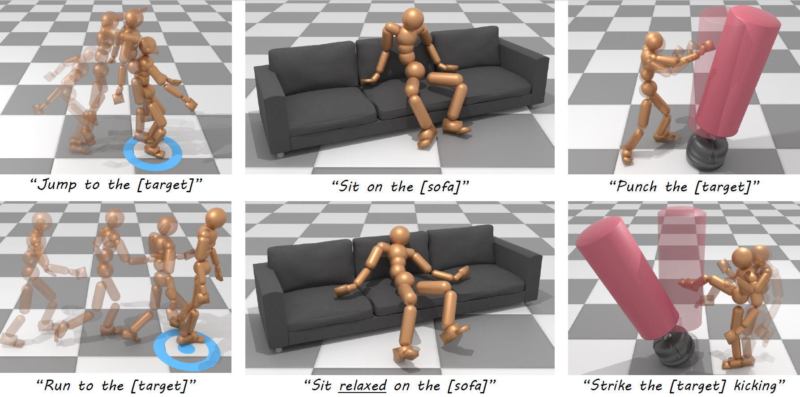

International Conference on Learning Representations (ICLR 2025) Spotlight
Guy Tevet (1, 2)Sigal Raab (1)Setareh Cohan (2)Daniele Reda (2)Zhengyi Luo (3)Xue Bin Peng (4, 5)Amit H. Bermano (1)Michiel van de Panne (2)
(1) Tel-Aviv University(2) University of British Columbia(3) Carnegie Mellon University(4) Simon Fraser University(5) NVIDIA

Abstract
Motion diffusion models and Reinforcement Learning (RL) based control for
physics-based simulations have complementary strengths for human motion generation.
The former is capable of generating a wide variety of motions, adhering
to intuitive control such as text, while the latter offers physically plausible motion
and direct interaction with the environment. In this work, we present a method
that combines their respective strengths. CLoSD is a text-driven RL physicsbased
controller, guided by diffusion generation for various tasks. Our key insight
is that motion diffusion can serve as an on-the-fly universal planner for a
robust RL controller. To this end, CLoSD maintains a closed-loop interaction between
two modules — a Diffusion Planner (DiP), and a tracking controller. DiP
is a fast-responding autoregressive diffusion model, controlled by textual prompts
and target locations, and the controller is a simple and robust motion imitator that
continuously receives motion plans from DiP and provides feedback from the environment.
CLoSD is capable of seamlessly performing a sequence of different
tasks, including navigation to a goal location, striking an object with a hand or
foot as specified in a text prompt, sitting down, and getting up.
@inproceedings{
tevet2025closd,
title={CLoSD: Closing the Loop between Simulation and Diffusion for multi-task character control},
author={Guy Tevet and Sigal Raab and Setareh Cohan and Daniele Reda and Zhengyi Luo and Xue Bin Peng and Amit Haim Bermano and Michiel van de Panne},
booktitle={The Thirteenth International Conference on Learning Representations},
year={2025},
url={https://openreview.net/forum?id=pZISppZSTv}
}